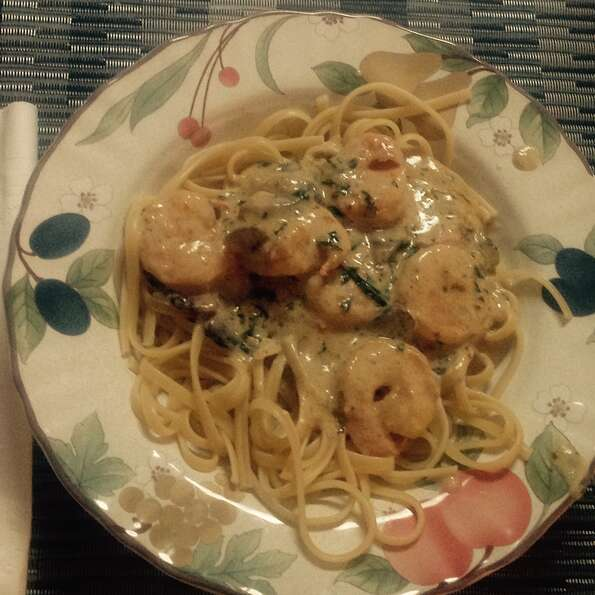

Creamy Pesto Shrimp

Despription
Really easy and fast to make pasta with shrimp and pesto
Make it to your family or why not invite some friends over for a glas of wine and amazing pasta dish
Ingredients
- 1 pound linguine pasta
- ½ cup butter
- 2 cups heavy cream
- 1 cup grated Parmesan cheese
- ⅓ cup pesto
- 1 pound large shrimp, peeled and deveined
Steps
- Bring a large pot of lightly salted water to a boil. Add linguine pasta, and cook for 8 to 10 minutes, or until al dente; drain.
- In a large skillet, melt the butter over medium heat. Stir in cream, and season with pepper. Cook 6 to 8 minutes, stirring constantly.
- Stir Parmesan cheese into cream sauce, stirring until thoroughly mixed. Blend in the pesto, and cook for 3 to 5 minutes, until thickened.
- Stir in the shrimp, and cook until they turn pink, about 5 minutes. Serve over the hot linguine.